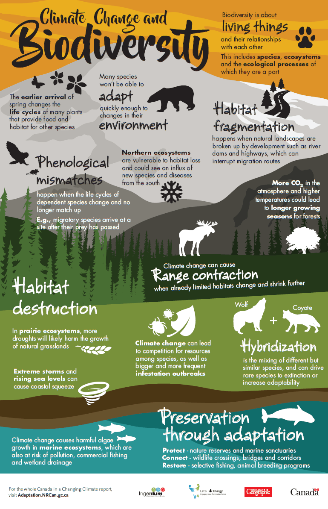

Infographic
Noja, Ariel M.

Writing a letter
Climate change has brought the Philippines into a crisis, significantly reducing the working areas for its people. This crisis stems from various factors, including deforestation, the burning of fossil fuels, greenhouse gas emissions, inappropriate water usage, and more. Deforestation, the clearing of forests for agriculture and development, disrupts the natural balance, leading to habitat loss and increased temperatures. Burning fossil fuels releases carbon dioxide, intensifying the greenhouse effect and causing more frequent and severe extreme weather events like typhoons, droughts, and floods. The emission of greenhouse gases from industrial processes further contributes to rising global temperatures. Additionally, inappropriate water usage exacerbates the crisis, as climate change disrupts rainfall patterns, leading to periods of drought and water scarcity. These challenges require sustainable solutions such as reforestation, transitioning to renewable energy sources, stricter emission controls, and efficient water management strategies. By addressing the causes and implementing proactive measures, the Philippines can mitigate the impacts of climate change, protecting working areas and ensuring a better future for its citizens.
Ariel M. Noja
Fifteen years from now, if people do not take responsibility for saving the Earth from the effects of climate change, our planet will face dire consequences. The impacts will be felt across various aspects of our lives, from the environment to the economy and human well-being.
In terms of the environment, we can expect more extreme weather events such as hurricanes, heatwaves, and droughts. Rising sea levels will threaten coastal communities, leading to increased flooding and the loss of homes and infrastructure. The loss of biodiversity will continue as habitats disappear, causing irreversible damage to ecosystems. This will disrupt the delicate balance of nature and further endanger the survival of countless plant and animal species.
The consequences of climate change will also extend to the economy. Agriculture will be severely affected, with crop yields declining due to changes in rainfall patterns and increased pest infestations. This will lead to food shortages and higher prices, impacting the livelihoods of farmers and the availability of affordable food for everyone. The tourism industry, dependent on pristine natural environments, will suffer as iconic landscapes and coral reefs are damaged by rising temperatures and ocean acidification.
The health and well-being of individuals will also be at risk. Heatwaves will become more frequent and intense, putting vulnerable populations, such as the elderly and children, in danger. The spread of diseases, like malaria and dengue fever, will increase as changing climatic conditions create more favorable environments for disease-carrying vectors. Furthermore, the mental health of individuals may be affected as the loss of homes and livelihoods, and the uncertainty of the future take a toll on their well-being.
It is crucial that we take action now to prevent this bleak future. By reducing greenhouse gas emissions, transitioning to renewable energy sources, and adopting sustainable practices, we can mitigate the effects of climate change. Additionally, preserving and restoring ecosystems, implementing resilient infrastructure, and promoting sustainable lifestyles can help protect our planet and secure a brighter future for generations to come. It is our collective responsibility to act now and make the necessary changes to save the Earth from the devastating consequences of climate change.